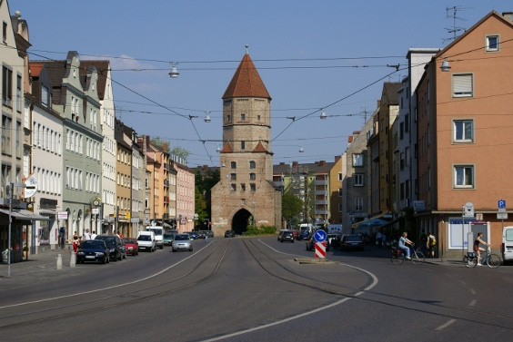

Bilder manipulieren
Um verschiedene Techniken der Bildmanipulation vorzustellen, soll aus dem Bild mit dem Jakoberto der Turm isoliert und neben den Gaskessel gesetzt werden.|  |
| Abb. 1: Das Jakobertor |
 |
| Abb. 2: Der Gaskessel |
Das fertige Bild wird später dann so aussehen:
 |
| Abb. 3: So wird das fertige Bild einmal aussehen |
© 2009-2017 Michael Roppel